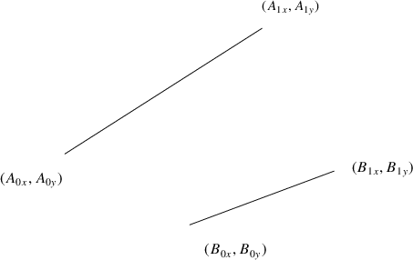
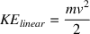
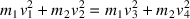

addEvent(0.0, drawFrameEvent);
addNextCollisionEvent;
while (s<t)
{
dt = doNextEvent();
s = s + dt;
}
updatePhysics(currentTime-lastCollisionTime);
lastCollisionTime = currentTime;


/* calculate normal collision value */ c.x = movable->c.pos.x - center.x ; c.y = movable->c.pos.y - center.y ; r = sqrt(c.x*c.x+c.y*c.y) ; normalCollision.x = c.x/r ; normalCollision.y = c.y/r ; relativeVelocity.x = movable->vx ; relativeVelocity.y = movable->vy ;
j = (-(1.0+1.0) *
((relativeVelocity.x * normalCollision.x) +
(relativeVelocity.y * normalCollision.y)))/
(((normalCollision.x*normalCollision.x) +
(normalCollision.y*normalCollision.y)) *
(1.0/movable->c.mass)) ;
movable->vx := movable->vx + (j * normalCollision.x) / movable->c.mass ;
movable->vy := movable->vy + (j * normalCollision.y) / movable->c.mass ;
/* calculate normal collision value */ c.x = iptr->c.pos.x - jptr->c.pos.x ; c.y = iptr->c.pos.y - jptr->c.pos.y ; r = sqrt(c.x*c.x+c.y*c.y) ; normalCollision.x = c.x/r ; normalCollision.y = c.y/r ; relativeVelocity.x = iptr->vx - jptr->vx ; relativeVelocity.y = iptr->vy - jptr->vy ;
j = (-(1.0+1.0) *
((relativeVelocity.x * normalCollision.x) +
(relativeVelocity.y * normalCollision.y)))/
(((normalCollision.x*normalCollision.x) +
(normalCollision.y*normalCollision.y)) *
(1.0/iptr->c.mass + 1.0/jptr->c.mass)) ;
iptr->vx = iptr->vx + (j * normalCollision.x) / iptr->c.mass ;
iptr->vy = iptr->vy + (j * normalCollision.y) / iptr->c.mass ;
jptr->vx = jptr->vx - (j * normalCollision.x) / jptr->c.mass ;
jptr->vy = jptr->vy - (j * normalCollision.y) / jptr->c.mass ;
/* firstly we need to find the normal to the line */ sortLine(p1, p2) ; /* p1 is left of p2, or lower than p2 */ /* create the vector p1 -> p2 */ v1 = subCoord(p2, p1) ; perpendiculars(v1, n1, n2) ; /* use n1 */ n1 = normaliseCoord(n1) ; vel = initCoord(cPtr->vx, cPtr->vy) ; vel = addCoord(scaleCoord(n1, -2.0 * dotProd(vel, n1)), vel) ; cPtr->vx = vel.x ; cPtr->vy = vel.y ;
$ wget
http://floppsie.comp.glam.ac.uk/Download/targz/run-pge-script
$ chmod 755 run-pge-script
This document was produced using groff-1.22.